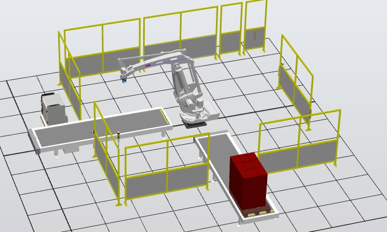
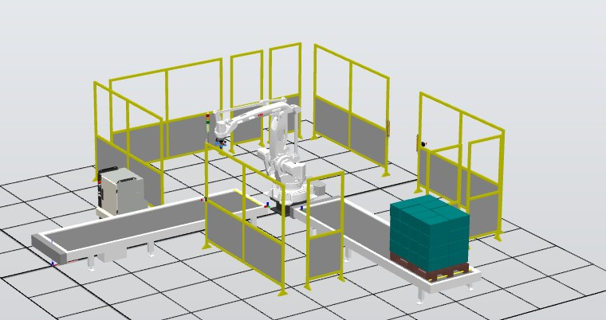

Componentes de seguridad
Cortinas de luz Sick C4000 con función de muting, vallado perimetral Troax ST20, acceso de operadores con enclavamiento Schmersal AZM201, escáner láser perimetral y botones de paro de emergencia.
Módulo 04 de 07
Dos celdas de paletizado con robots ABB (IRB 660 e IRB 460) y PLC ControlLogix 5580, simuladas en RobotStudio.
Propuesta
Proponemos dos celdas robotizadas independientes para el final de las líneas de Coca-Cola y Monster Energy en la planta FEMSA Bogotá, con un PLC ControlLogix 5580 común. El caso más exigente —429 pacas/hora en Coca-Cola plástica— define un ciclo de una paca cada 8,4 segundos. Ambas celdas comparten la infraestructura civil: losa de concreto reforzado de 250 mm.
Diseño

Paletiza las presentaciones retornable 1,5 L y plástica 2,5 L en un patrón de 3 filas × 3 columnas × 3 niveles, con slip-sheets entre capas. Gripper: clamp mecánico Schunk. Alcance de 3,15 m y protección IP67 para el ambiente húmedo de la línea.

Paletiza las cajas de lata de 500 mL (395 cajas/h) en un patrón de 2 filas × 4 columnas × 4 niveles. Gripper: placa de vacío (Vacuum Plate) con bomba eléctrica regenerativa. Robot compacto de 4 ejes de alta cadencia.
Seguridad industrial
La arquitectura de seguridad se diseñó bajo las normas ISO de robótica industrial y la reglamentación colombiana de construcción e instalaciones eléctricas.
Cortinas de luz Sick C4000 con función de muting, vallado perimetral Troax ST20, acceso de operadores con enclavamiento Schmersal AZM201, escáner láser perimetral y botones de paro de emergencia.
ISO 10218-1/2 (robots industriales e integración), ISO 13849-1 (mandos de seguridad), ISO 13850 (paro de emergencia), ISO 13855/13857 (distancias de seguridad), ISO 14120 (resguardos) e ISO 12100 (evaluación de riesgos).
NSR-10 (construcción sismo resistente) para la losa de 250 mm y RETIE para las instalaciones eléctricas de las celdas.
Simulación en RobotStudio
Documentos